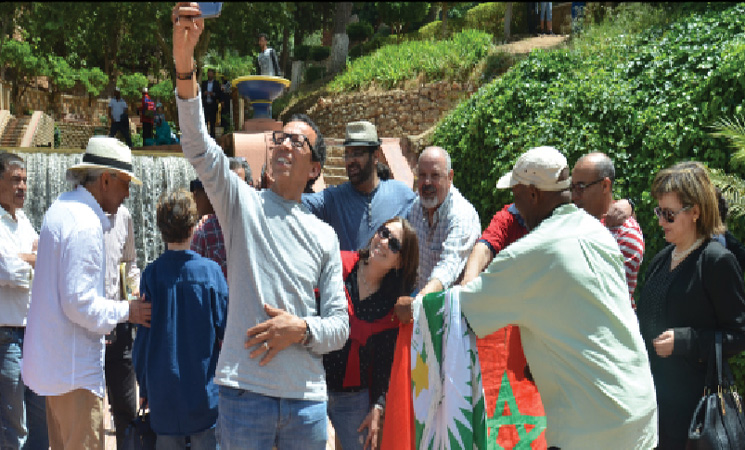
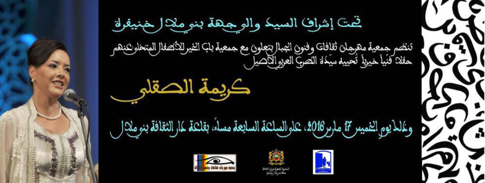
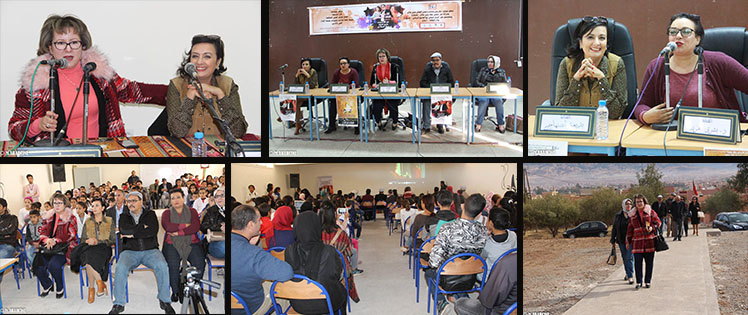
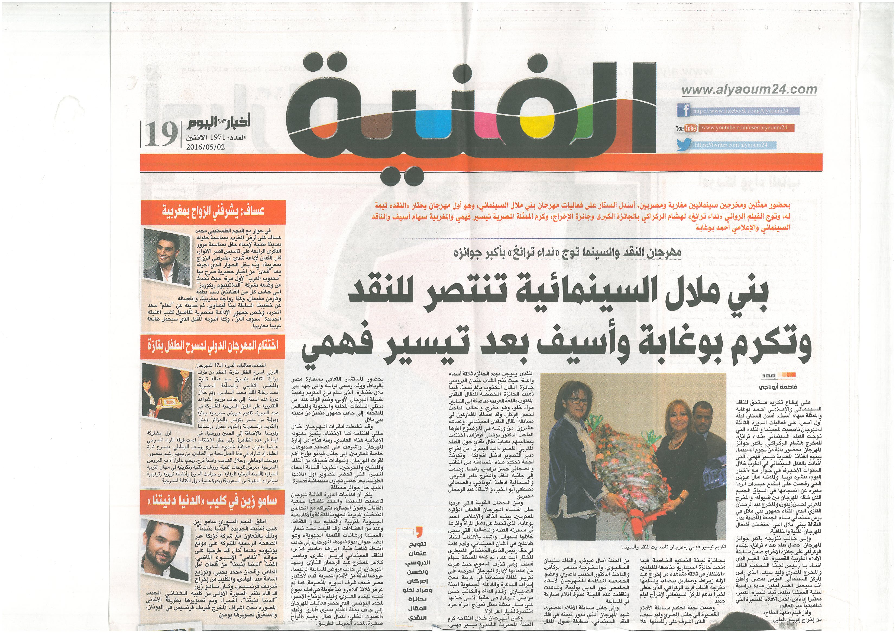
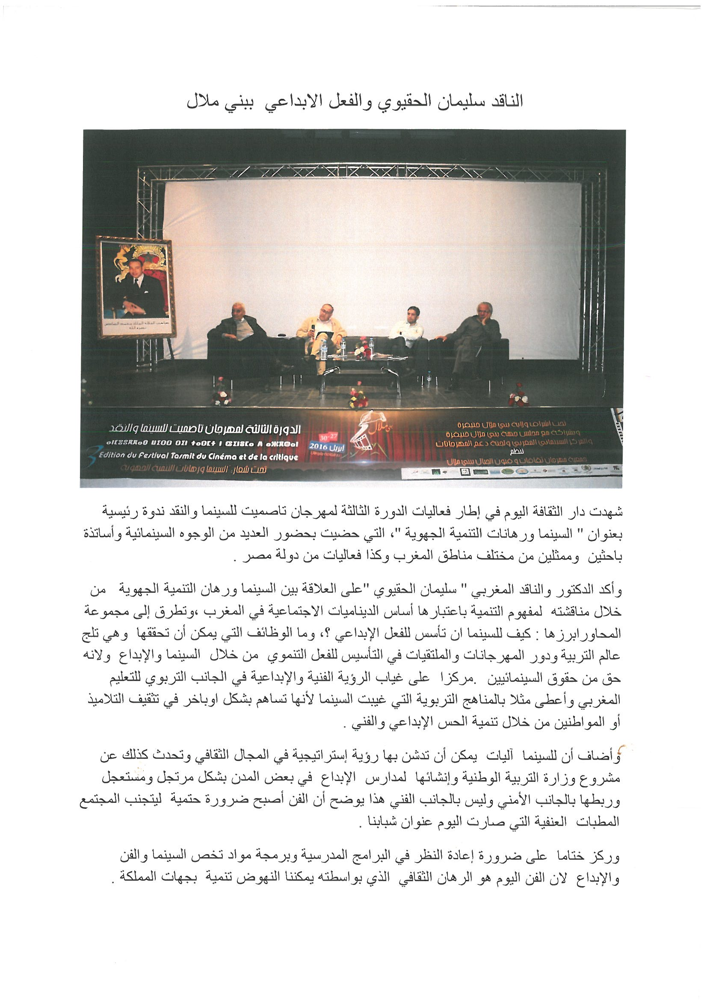
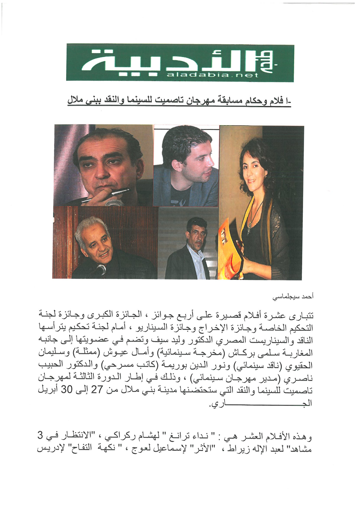
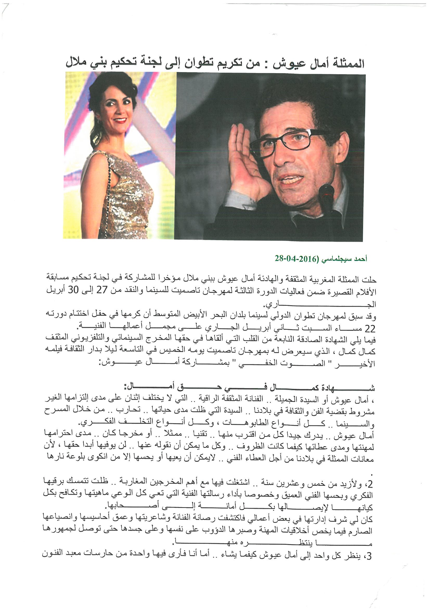
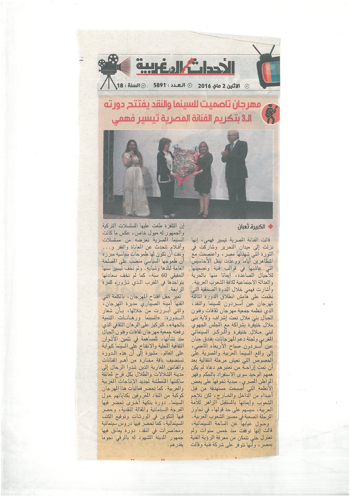

مــهرجان "تاصميت" ينفتح على السينما و النقد
{kind=link}
انطلقت فعاليات مهرجان "تاصميت" للسينما و النقد ... بحضور والي جهة بني ملال خنيفرة الذي قدم للفنانة المحتفى بها بتيسير فهمي تذكار للمهرجان ، في أجواء احتفالية كسرت جو الرتابة و الملل الذي خيم على مدينة لم تنل نصيبها من الفن و الثقافة رغم امتلاكها كافة المقومات الي تجعلها قبلة فنية و ثقافية.
وحضرت فعاليات سينمائية و ثقافية وطنية و عربية أجواء الاحتفال الذي افتتحت فعالياته بكلمة لمديرة المهرجان التي عبرت عن فرحتها لانتصار قيم الجمال و الفن في مدينة مازالت تحتاج لمبادرات رائدة لإدماجها في أجواء التنمية الثقافية التي تشهدها...
مهرجان تاصميت للسينما والنقد ببني ملال: الاحتفاء بالإبداع
عاشت مدينة بني ملال على إيقاعات مهرجان «تاصميت» للسينما والنقد طيلة أربعة أيام، ما بين 26 إلى غاية 29 أبريل 2017. الميزة الأساسية لهذا المهرجان في نسخته الرابعة تتمثل في طابع الاحتفاء بالمبدع المغربي والعربي بدءا من الناقد السينمائي ،مركز الاهتمام، إلى الروائي والشاعر وصولا إلى الممثل والسينمائي والموسيقي. تعددت أشكال الورشات بين المونتاج والسيناريو والقراءة الفيلمية وأداء الممثل وورشات للأطفال الصغار…. ومتابعة جماهيرية كبيرة لأغلب أنشطة المهرجان في مدينة تؤسس لتقاليد سينمائية جادة. في كلمة أمينة الصيباري مديرة المهرجان» أن هوية المهرجان تتأسس على منظور نقدي من خلاله يستطيع المتتبع طرح الأسئلة ومعاودة النقاش والبحث في تفاصيل الأشياء دون الاستكانة إلى الأشياء في طبيعتها النمطية الهادئة ».
نورالدين الصايل: نعيش مرحلة انتقالية
في الماستر كلاس لهذه السنة الذي كان من تنشيط الصحفي بلال مرميد… استفاض نور الدين الصايل في التطرق إلى جوانب متعددة
من أوجه النقد السينمائي المغربي في مواجهة ما تعيشه السينما من مخاضات وقال « وصلنا لمرحلة إنتاج أزيد من 25 فيلما
في السنة يكون الجيد فيها ثلاثة أفلام… وهو مؤشر جيد على تعافي السينما المغربية من الكثير من الإكراهات». وأضاف المحاضر
« أننا نعيش مرحلة انتقالية ينبغي الوعي بمدى خطورتها ليس فقط في السينما بل في الكثير من مناحي الحياة المغربية «.
تحدث المحاضر طويلا من خلال تجربته عن مهمة الناقد السينمائي الذي يتابع بدقة ليس فقط الفيلم السينمائي، لكن أيضا المحيط
العام لما يدور حوله. وفصل بين أنواع النقد منها : الإذاعي و التلفزي والإخباري والنقد الرصين… وقال « إن النقد السينمائي
لا يواكب ما تنتجه السينما المغربية للعديد من الظروف والمعطيات». تقبل الصايل أسئلة الجمهور وظلت قاعة المركب الثقافي
غاصة بالجمهور حتى نهاية المحاضرة.
أفلام المهرجان: مخرجون بطعم الإصرار
قبل بداية فيلم هشام العسري…. غاب المخرج وحضر الفيلم… وغصت القاعة عن آخرها في متابعة شريط قصير لهشام الوالي كتجربة
مخرج شاب بعفويته وتلقائيته
في فيلم « البهلوان «من بطولة المرهفة منال الصديقي التي كتبت القصة عن معاناتها مع المرض من خلال إدخال البهجة والفرح
في قلوب الصغار بألوانها المزركشة صحبة صديقها في العمل. ينتهي الفيلم كتجربة إخراجية أولى في حصول الممثلة منال الصديقي
على جائزة أحسن ممثلة وتعاطف شعبي معها.
فيلم هشام العسري… فيلم يمزج بين الواقعية والفنتازيا ويسلط الضوء على فترة حرجة من تاريخ المغرب المعاصر بإكراهات
المرحلة بين الانتفاضات الشعبية لسنة1981 حتى مشاركة المغرب في مونديال 1986 ، داخل هذا السياق الزمني يركز الفيلم على
شخصية شرطي يصاب بحجر في رأسه في انتفاضات الكوميرا 1981ويتعافى، ويستمر في أسلاك الشرطة ويكلف بمهمة حراسة قنطرة في
الطريق السيار قبل مرور الملك الحسن الثاني… فيلم سأعود إليه في فرصة قادمة يجلد المخزن ويعري عورته في مجموعة من القوالب
والمواقف والمشاهد بلغة جريئة صادمة تتجاوز الرقابة الذاتية التي يفرضها المخرج المغربي على نفسه. لغة سينمائية تذهب
في أكثر من اتجاه من قلب حياة مخزنية ترى في استمراريتها انقسام القبيلة وتشظي الواقع المغربي وتشرذمه، وكذا الشر القادم
من السلطة وكيف تمتهن القمع والخوف ضمانا لاستمراريتها. فيلم غني بالدلالات والرموز ويركز على مصاهرة المخزن/ السلطة
ببائعي الحشيش والخمور في لعبة إحكام الطوق.
عشرة أفلام قصيرة تنافست على الجوائز المخصصة بعد أن حذفت اللجنة جائزة أحسن مخرج حتى « لا يتعاظم ويغتر المخرجون الشباب
بتجاربهم الأولى « حسب لجنة التحكيم التي ترأسها المخرج المغربي حسن بنجلون.
الأفلام القصيرة المشاركة فيلم «البهلوان» للمخرج هشام الوالي..فيلم « الاسم الشخصي محمد « لمليكة زابري..فيلم « تكيتة
السوليما» لأيوب اليوسفي..» فرصة « لخالد الضواش ..» أزمة «عبد الإله زيراط..» أخنيف أبرياش « لنورة أزروال تافات..»
جريمة كاملة « لإدريس مرزاق..» الطريق إلى الديدان» ..» يوم مطر» لعماد بادي.. « حتى النهاية « لأحمد الطاهري الإدريسي.
تنوعت مستويات هذه الأفلام وهي تؤسس لمشاريع مخرجين مغاربة بنفحة إبداعية كبيرة تحتاج للكثير من المتابعات النقدية الرصينة…
وعدم السقوط في فخ التباهي والنهل من التجارب العالمية الملهمة دون الانغماس كلية في موروثات السينما المغربية. تجارب
شبابية جميلة وواعدة، بعد الحديث مع أغلب المخرجين والمخرجات هناك نوع من الإصرار والتحدي في ظل ما يعيشه الواقع السينمائي
من هيمنة للحيتان الكبيرة على المجال السمعي البصري في المغرب.
كريمة الصقلي تتألق في حفل فني لفائدة جمعية مهرجان ثقافات وفنون الجبال
عاشت قاعة دار الثقافة ببني ملال ليلة الخميس 17 مارس 2016 أمسية لم تشهدها من قبل، فلأول مرة تحتضن سهرة من النوع الاصيل، فقد أتحفت الجمهور المتعطش لهذا اللون من الغناء الكلاسيكي أميرة الغناء العربي كريمة الصقلي . اهتزت فعلا جنبات القاعة التي امتلأت عن آخرها برنات موسيقية عذبة لفرقة متمرسة، و بألحان تقشعر لها الابدان، و بصوت عال أمتع و أوقع في النفوس ما لم تحسس به من قبل.

كما كان الحضور المتميز للسيد والي جهة بني ملال خنيفرة – الحفل تحت إشراف الولاية-و السيدة أمينة الصيباري رئيسة جمعية مهرجان
ثقافات و فنون الجبال التي افتتحت هذا الحفل بكلمة نوهت بمجهودات السيد الوالي و تشجيعه للثقافة كما هو معهود فيه،و
كذلك التعاون المثمر بين جمعيتها و جمعيات المجتمع المدني العاملة و النشيطة في كل المجالات، و كما أضافت فهذه المرة
جاء دور جمعية باب الخير للأطفال المتخلى عنهم لتستفيد هي الاخرى من هذا العمل الخيري.
كما كان حضور السيد مدير أكاديمية جهة بني ملال خنيفرة و الذي تجمع مؤسسته شراكة تعاون مع جمعية مهرجان ثقافات
و فنون الجبال ،و يمثل حضوره الدائم و تعاونه المثمر مع هذه الجمعية بتوفيره الاجواء المناسبة لاحتضان الورشات الفنية
التكوينية للمتعلمين أثناء مهرجانات السنيما السابقة و للاحقة إن شاء الله. فالشكر الجزيل للمسؤول الاول عن التربية
و التكوين بالجهة.
و قد اختتم الحفل بتقديم السيد الوالي للبورتري للفنانة كريمة الصقلي من إبداع الفنانة سهام لمجعفر بنت مدينة بني ملال،
و التي لم تتردد حين طلب منها رسم بورتري لأميرة الغناء العربي.
و بهذه المناسبة نقدم الشكر لأعضاء مكتب جمعية مهرجان ثقافات و فنون الجبال على المجهودات التي بذلوها لإنجاح مثل هاته الانشطة
الشهرية المسطرة. فبعد افتتاحها بعرض فيلم "تاريخ دخول السينما للمغرب "من إبداع المخرج الشاب بوشتى المشروح، تلتها
شهر فبراير الايام الثقافية الامازيغية، و البارحة كان حفل الغناء الاصيل. فألف شكر لجمعية مهرجان ثقافات و فنون الجبال
و التي تضرب موعدا لجمهور بني ملال أواخر شهر أبريل لحضور فعاليات مهرجان تاصميت للسينما .
و حسب مصدر من الجمعية ستكون مصر الكنانة ضيف شرف هذه الدورة. و يتداول بين الاوساط الصحفية حضور أسماء فنية
وازنة من الشقيقة مصر كالفنان القدير عزت العلايلي و الفنانة المقتدرة تيسير فهمي.
مدينة خنيفرة ومؤسسة الابداع الفني بها تستضيفان وفدا كوميديا هاما...
استضافت رحاب مؤسسة الابداع الفني والادبي بمدينة خنيفرة , صباح يوم الجمعة 24 نونبر 2017 , وفدا كوميديا مؤلفا من الممثل والمخرج السينمائي عبد الله فركوس , بديعة الصنهاجي وبشرى اهروش , من اجل تنشيط صبيحة فنية لفائدة تلاميذ المؤسسة بمختلف شعابها الفنية واللغوية.
ويدرج هذا اللقاء الثقافي ضمن سلسلة اللقاءات التي تنظمها جمعية مهرجان سكان الجبال ببني ملال بقيادة الاستاذة أمينة سيباري مديرة مهرجان خريبكة الدولي للسينما الافريقية.
وبعد كلمات الترحاب المتبادلة بين الوفد الزائر واطر المؤسسة المستضيفة ,والتعريف بالاهداف الفنية والثقافية للقاء , عرض فيلم سينمائي قصير تضمن رحلة طفل عاشق للسينما ويحرم من ولوج قاعاتها نتيجة الفقر من جهة ورفض الابوين من جهة ثانية . وتلى العرض نقاش تفاعلي بين تلاميذ المؤسسة والممثلين الحاضرين, تمحور حول الثيمات الكبرى التي تناولها الشريط والاشاكالات المجتمعية التي يعالجها.
أما الامسية ,والتي اختير لها فضاء المركب الثقافي ابي القاسم الزياني , فقد تمركزت حول نقاش تفاعلي بين الجمهور الحاضر وبكثافة , وبين كل الممثلين الزائرين والاستاذتين المنظمتين لهذه التظاهرة ذات الامتداد الجهوي ( خنيفرة / ازيلال ), اثار اثناءه الجمهور الناشئ وبعض المثقفين المحليين العديد من الاسئلة التي لازالت تشغل متتبعي الفن السابع بالمغرب وبالدرجة الاولى تجربة الممثلين الثلاث سواء تليفزيونيا او سينمائيا.
وياتي هذا الحدث الفني , حسب المنظمين وبعض اطر المؤسسة المحتضنة , ليمنح دفعة قوية للبنة الفنية التربوية التي احدثت بمدرسة النهضة سابقا واطلق عليها مؤسسة الابداع الفني والادبي , وذلك في افق اعطاء النشاط الموازي طابعا مؤسساتيا قادرا على تأطير مواهب المتعلمين وتحفيزها على التفاعل مع الحراك المجتمعي, مع محاربة الكثير من الافات الشبابية المنتشرة نتيجة تقهقر دور الاندية التربوية وتراجع الادوار الثقافية والفنية للاطارات المدنية ابان العقود الاخيرة, وعجزها عن هيكلة الفعل التثقيفي في عموم ارجاء الوطن.
المصدربني ملال السينمائية تنتصر للنقد و تكرم بوغابة وأسيف بعد تيسير فهمي
على إيقاع تكريم مستحق للناقد السينمائي و الإعلامي أحمد بوغابة و الممثلة سهام أسيف، أسدل الستار، ليلة أول أمس، على فعاليات الدورة الثالثة ل "مهرجان تاصميت للسينما و النقد"، التي توج الفيلم السنمائي "نداء ترانغ" للمخرج هشام الركراكي، بأكبر جوائز المهرجان، بحضور باقة من نجوم السينما، بينهم الفنانة المصرية تيسير فهمي، التي أشادت بالفعل السينمائي في المغرب خلال السنوات الأخيرة، في حوار مع ...
االناقد سليمان الحقيوي و الفعل الإبداعي ببني ملال
شهدت دار الثقافة اليوم في إطار فعاليات الدورة الثالثة لمهرجان تاصميت للسينما و النقد ندوة رئيسية بعنوان السينما و رهانات التنمية الجهوية، التي حضيت بحضور العديد من الوجوه السينمائية و أساتذة باحثين...
أفلام و حكام مسابقة مهرجان تاصميت للسينما و النقد ببني ملال
تتبارى عشرة أفلام قصيرة على أربع جوائز، الجائزة الكبرى و جائزة لجنة التحكيم الخاصة و جائزة الإخراج و جائزة السيناريو، أمام لجنة تحكيم يترأسها الناقد و السيناريست المصري الدكتور وليد سيف و تضم ...
الممثلة أمال عيوش : من تكريم تطوان إلى لجنة تحكيم بني ملال
حلت الممثلة المغربية المثقفة و الهادئة أمال عيوش ببني ملال مؤخرا للمشاركة في لجنة تحكيم مسابقة الأفلام القصيرة ضمن فعاليات الدورة الثالثة لمهرجان تاصميت للسينما و النقد من ...
مهرجان تاصميت للسينما و النقد يفتتح دورته الثالثة بتكريم الفنانة المصرية تيسير فهمي
قالت الفنانة المصرية تيسير فهمي، إنها نزلت إلى ميدان التحرير و شاركت في الثورة التي شهدتها مصر، و اعتصمت مع المتظاهرين أياما و وعدت بنقل الأحاسيس التي عاشها في قوالب فنية و تضمينها للأجيال الصاعدة، إيمانا منها بالحرية ...، و أشارت فهمي خلال الندوة الصحفية التي نظمت على هامش انطلاق الدورة الثالثة ...
